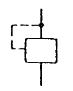
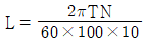
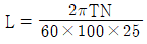
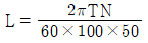
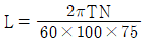
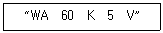

기계가공기능장 (2016-04-02 기출문제)
1과목: 임의 구분
1. 아래 조작방식 기호의 명칭은?

- 내부 파일럿 조작
- 외부 파일럿 조작
- 유압 파일럿 조작
- 단동 솔레노이드 조작
(정답률: 68%)

2. 유압모터의 마력을 구하는 식으로 옳은 것은? (단, L : 유압모터의 마력(PS), N : 유압모터의 회전수(rpm), T : 유압모터의 출력토크(kgf·m) 이다.)




(정답률: 70%)
3. 동기회로에서 동기를 방해하는 요인이 아닌 것은?
- 내부 누설
- 마찰의 차이
- 실런더 행정의 길이
- 실린더내 안지름의 차이
(정답률: 60%)
4. 다음 중 유압 작동유에 기포가 발생하여 미치는 영향을 옳은 것은?
- 작동유의 윤활성을 증대시킨다.
- 작동유의 압축성이 증가하여 기기의 응답성이 저하된다.
- 펌프 부품의 마찰운동부가 이상 마모하여 용적효율이 저하된다.
- 릴리프 밸브의 포핏 부분에 이물질이 쌓여 압력 변동의 원인이 된다.
(정답률: 48%)
5. 공기압 에너지를 사용하여 연속회전 운동을 하는 기기는?
- 회전 밸브
- 진공 실린더
- 공기압 모터
- 공기압 실린더
(정답률: 71%)
6. 수광 영역은 주로 접합의 구조에서 정해지지만 일반적으로 400~1100nm의 파장영역에서 사용할 수 있고, 특히 700~900nm에서 감도가 최대가 되는 특성을 가진 센서는?
- 포토 커플러
- 포토 다이오드
- 포토 인터럽트
- 포토 트랜지스터
(정답률: 57%)
7. 다음 중 정량적 제어(quantitative control) 방식은?
- 개루프 제어
- 시퀀스 제어
- 폐루프 제어
- 프로그램 제어
(정답률: 37%)
8. 1대의 NC공작기계를 핵심으로 하여 자동공구 교환장치(ATC), 자동팰릿교환장치(APC), 그리과 팰릿 매거진을 배치한 생산 시스템은?
- CIM
- FMC
- FMS
- FTL
(정답률: 55%)
9. 다음 중 유압시스템에서 실린더의 추력이 정상보다 감소되었을 때 그 고장 원인으로 가장 거리가 먼 것은?
- 펌프의 토출 증가
- 구동 동력의 부족
- 릴리프밸브의 조정불량
- 유압 작동유의 외부누설증가
(정답률: 60%)
10. 다음 중 제어용 서보모터의 특징과 가장 거리가 먼 것은?
- 피드백 장치가 있다.
- 넓은 속도제어 범위를 갖는다.
- 모터 자체의 관성모멘트가 크다.
- 큰 가감속 토크를 얻을 수 있다.
(정답률: 62%)
11. 수직 밀링머신의 주요 구조가 거리가 먼 것은?
- 새들
- 컬럼
- 테이블
- 오버 암
(정답률: 71%)
12. ø80mm의 환봉을 선반 주축회전수 500rpm으로 절삭하였을 경우, 주분력은 100kg을 하면 절삭동력(kW)은 약 얼마인가?
- 1.⑤
- 2.⑤
- 3.⑤
- 4.⑤
(정답률: 50%)
13. 선반 가공에서 테이퍼(taper)를 절삭하는 방법이 아닌 것은?
- 인덱스를 이용하는 방법
- 심압대를 편위 시키는 방법
- 복식공구대를 경사 시키는 방법
- 테이퍼 절삭장치를 이용하는 방법
(정답률: 70%)
14. 정지센터로 가공물을 지지하고 단면을 가공하면 바이트와 가공물의 간섭으로 가공이 불가능하게 된다. 이때 보통센터의 선단 일부를 가공하여 단면가공이 가능하도록 제작한 센터는?
- 센터 드릴(center drill)
- 하프 센터(half center)
- 파이프 센터(pipe center)
- 베어링 센터(bearing center)
(정답률: 69%)
15. 브라운 샤프형 분할대를 이용하여 원주를 9등분 하고자 할 때 분할판 크랭크는 몇 회전 시켜야 하는가?
- 18회전
- 9회전
- 8회전
- 4회전
(정답률: 60%)
16. 전해 연마(electrolytic polishing)의 특징이 아닌 것은?
- 가공 변질층이 없다.
- 가공면에 방향성이 있다.
- 내마모성, 내부식성이 향상된다.
- 복잡한 형상의 가공물의 연마가 가능하다.
(정답률: 65%)
17. 줄눈의 모양이 물결모양으로 되어 날 눈의 흠 사이에 칩이 끼지 않으므로 납, 알루미늄, 플라스틱, 목재 등에 주로 사용되는 것은?
- 단목(single cut)
- 복목(double cut)
- 귀목(rasp cut)
- 파목(curved cut)
(정답률: 61%)
18. 다음 연삭숫돌의 표시 방법에서 “V”의 의미는?

- 입도
- 조직
- 결합도
- 결합제
(정답률: 66%)
19. 다음 중 액체호닝의 일반적인 특징에 대한 설명으로 가장 거리가 먼 것은?
- 피닝(peening) 효과가 있다.
- 다듬질면의 진원도, 진직도가 우수하다.
- 공작물 표면의 산화막을 제거하기 쉽다.
- 형상이 복잡한 것도 쉽게 가공할 수 있다.
(정답률: 58%)
20. 직경 D=120mm, 날수 Z=2인 평면 커터로 절삭속도 V=30m/min, 절삭깊이 d=2mm, 이송속도 f=200mm/min을 절삭할 때, 칩의 평균 두께 tm(mm)는?
- 0.16mm
- 1.6mm
- 0.36mm
- 3.6mm
(정답률: 34%)
2과목: 임의 구분
21. 연삭가공에 대한 설명으로 틀린 것은?
- 연삭점의 온도가 매우 낮다.
- 경화된 강과 같은 단단한 재료를 가공할 수 있다.
- 표면 거칠기가 우수한 다듬질 면을 가공할 수 있다.
- 연삭 입력 및 연삭 저항이 적어 전자석 척으로 가공물을 고정할 수 있다.
(정답률: 69%)
22. 래핑(lapping)에 대한 설명으로 틀린 것은?
- 가공면의 내마모성이 좋다.
- 정밀도가 높은 제품을 가공할 수 있다.
- 작업이 지저분하고 먼지가 많이 발생한다.
- 평면도, 진원도 등의 이상적인 기하학적 형상을 얻을 수 없다.
(정답률: 58%)
23. 절삭가공의 절삭온도를 측정하는 방법으로 거리가 먼 것은?
- 칼로리메터에 의한 방법
- 정전 용량법에 의한 방법
- 시온도료를 이용하는 방법
- 삽입된 열전대에 의한 방법
(정답률: 62%)
24. 산화알루미늄을 주성분으로 하여 마그네슘, 규소 등의 산화물과 소량의 다른 원소를 첨가하여 소결한 절삭공구는?
- 서멧
- 세라믹
- 소결 초경합금
- 주조 경질합금
(정답률: 57%)
25. 보통선반의 기하학적 정확정밀도 검사에서 검사항목으로 거리가 먼 것은?
- 척의 흔들림
- 주축대 센터와 심압대 센터와의 높이차
- 심압대 운동과 왕복대 운동과의 평행도
- 가로 이송대의 운동과 주축 중심선과의 직각도
(정답률: 67%)
26. 다음 중 인조 숫돌 입자인 녹색 탄화규소의 기호로 옳은 것은?
- GC
- WA
- SiC
- CBN
(정답률: 67%)
27. 가공물을 고정하고, 연삭숫돌이 회전운동 및 공전운동을 동시에 진행하는 내면연삭방법은?
- 보통형 연삭방법
- 유성형 연삭방법
- 센터리스형 연삭방법
- 플랜지 컷형 연삭방법
(정답률: 54%)
28. 선반작업에서 가공물의 형상과 같은 모형이나 형판에 의해 자동으로 절삭하는 장치는?
- 정면절삭 장치
- 기어절삭 장치
- 모방절삭 장치
- 외경절삭 장치
(정답률: 75%)
29. 다음 중 밀링머신의 부속품 및 부속장치가 아닌 것은?
- 아버
- 심압대
- 밀링 바이스
- 회전 테이블
(정답률: 77%)
30. 1차로 가공된 가공물의 안지름보다 다소 큰 강철 볼(ball)을 압입하여 통과시켜서 가공물의 표면을 소성변형시켜 가공하는 방법은?
- 버니싱
- 폴리싱
- 숏 피닝
- 롤러가공
(정답률: 59%)
31. 다음 중 방전 가공의 전극 재료로 가장 적합한 것은?
- 니켈
- 아연
- 흑연
- 산화알루미나
(정답률: 62%)
32. 선반에서 편심량 2mm를 가공하기 위한 다이얼 게이지 지시 변위량으로 옳은 것은?
- 1mm
- 2mm
- 3mm
- 4mm
(정답률: 56%)
33. 다음 중 내식성 특수목적으로 사용되는 스테인리스강의 주성분으로 맞는 것은?
- Fe – Co - Mn
- Fe – W - Co
- Fe – Cu - V
- Fe – Cr – Ni
(정답률: 67%)
34. 다음 중 재료의 인장시험으로 알 수 없는 것은?
- 연신율
- 인장강도
- 탄성계수
- 피로한도
(정답률: 53%)
35. 표면경화강인 질화강에서 질화층의 경도를 높여주는 역할을 하는 원소는?
- 인
- 황
- 주철
- 알루미늄
(정답률: 29%)
36. 탄소강은 200~300℃에서 상온일 때 보다 강도는 커지고, 연신율은 대단히 작아져서 결국 인성이 저하되어 메지게 되는 성질을 가지게 되며 이때 산화 피막이 발생하는데 이러한 성질을 무엇이라 하는가?
- 청열취성
- 상온취성
- 저온취성
- 적열취성
(정답률: 66%)
37. 알루미늄에 관한 설명으로 틀린 것은?
- 전연성이 풍부하다.
- 열, 전기의 양도체이다.
- 용융점은 660℃ 정도이다.
- 실용금속 중 가장 무거운 금속이다.
(정답률: 75%)
38. 표점 거리가 50mm인 재료를 인장 시험하여 파단 후에 측정한 표점 거리가 60mm 이었다면 이 재료의 연신율은 몇 % 인가?
- 10
- 17
- 20
- 24
(정답률: 66%)
39. 주철의 조직관계를 나타내는 마우러 조직도는 어떤 원소들의 함량에 따른 관계도인가?
- C와 S의 함량
- C와 Si의 함량
- C와 P의 함량
- C와 Cu의 함량
(정답률: 63%)
40. 다음 중 공구현미경의 부속품이 아닌 것은?
- 펜타 프리즘
- 중심 지지대
- 반사 조명장치
- 나이프 에지(knife edge)
(정답률: 48%)
3과목: 임의 구분
41. 한계 게이지 중 내경(구멍) 측정용으로만 짝지어진 것은?
- 플러그 게이지, 링 게이지
- 플러그 게이지, 봉 게이지
- 테보 게이지, 스냅 게이지
- 스냅 게이지, 링 게이지
(정답률: 69%)
42. 촉침 회전식 진원도 측정기의 특징을 설명한 것으로 가장 옳은 것은?
- 구조가 비교적 간단하고 조작성이 좋다.
- 회전 정밀도가 좋지 않으나 가격이 저렴하다.
- 복잡한 제품의 측정에 적합하나 가격이 저가이다.
- 조작이 복잡하나 대형 제품 측정에 적합하다.
(정답률: 48%)
43. 표준자 재질이 강재인 길이 측정기로 알루미늄봉을 측정한 결과 35.346mm 이었다. 측정 시 측정기 표준자의 온도는 24℃, 알루미늄봉의 온도는 32℃라면 표준온도에서의 알루미늄봉의 길이는 약 몇 mm 인가? (단, 알루미늄봉의 열팽창계수는 23×10-6/℃, 강의 열팽창계수는 11.5×10-6/℃ 이다.)
- 35.343mm
- 35.338mm
- 35.355mm
- 35.320mm
(정답률: 37%)
44. 다음 측정기 중에서 선반 베드의 진직도 측정시 가장 고정밀도로 측정이 가능한 것은?
- 정밀 수준기
- 오토콜리메이터
- 레이저 간섭계
- 광선정반
(정답률: 45%)
45. 드릴 부시 종류 중 공구를 직접 아내하지 않는 부시는?
- 고정 부시
- 라이너 부시
- 회전형 삽입 부시
- 고정형 삽입 부시
(정답률: 66%)
46. 호칭치수 25mm의 K6급 구멍용 한계게이지의 통과측 치수허용차로 가장 옳은 것은? (단, K6급 공차는 위치수 허용차 +2μm, 아래치수 허용차 –11μm이며, 게이지 제작공차는 2.5μm, 마모여유는 2.0μm으로 한다.)
- 25.002 ± 0.00125 mm
- 25.0025 ± 0.001 mm
- 24.991 ± 0.00125 mm
- 24.9915 ± 0.001 mm
(정답률: 48%)
47. 재밍(Jamming)의 원인으로 거리가 먼 것은?
- 틈새의 크기
- 맞물림 길이
- 작업자의 손의 흔들림
- 모떼기
(정답률: 47%)
48. 다음 중 지그의 종류에 속하지 않는 것은?
- 템플릿 지그
- 플레이트 지그
- 카운터 지그
- 샌드위치 지그
(정답률: 56%)
49. 주로 용접지그나 조립지그 등에 많이 사용되며 공유압을 이용한 자동화 지그의 기본이 되는 클램프의 형식으로 고정력이 작용력에 비해 매우 큰 장점이 있는 클램프는?
- 토글 클램프
- 나사 클램프
- 쐐기 클램프
- 스트랩 클램프
(정답률: 56%)
50. 머시닝 센터에서 드릴가공 사이클을 사용할 때, 구멍 가공이 끝난 후 R점으로 복귀하기 위하여 사용되는 G코드는?
- G96
- G97
- G98
- G99
(정답률: 56%)
51. CNC 방전가공의 조건에 대한 설명으로 틀린 것은?
- 방전 전류가 클수록 다듬면 거칠기는 고와진다.
- 방전 전류가 클수록 가공속도는 올라간다.
- 클리어런스는 펄스폭(방전시간)이 클수록 커진다.
- 전극 소모비는 펄스폭(방전시간)이 클수록 작아진다.
(정답률: 42%)
52. 솔리드 모델링 방식의 특징으로 틀린 것은?
- 부피나 무게중심을 계산할 수 있다.
- NC 데이터를 생성할 수 있다.
- 메모리의 데이터 처리양이 Surface Modeling 보다 적다.
- 형상을 절단하여 단면도 작성이 용이하다.
(정답률: 71%)
53. 최근의 시제품을 만드는 방법으로 모델링 데이터를 한층, 한층 쌓아서 만드는 공정 방식은?
- 리버스 엔지니어링
- 쾌속 조형
- FMS 시스템
- 리모델링 시스템
(정답률: 60%)
54. CNC선반에서 지령 값이 X=60mm로 소재를 가공한 후 측정한 결과 외경이 59.95mm이었다. 기존의 X축 보정 값을 0.0⑤라 하면 최종 공구 보정 값은?
- 0.0⑤
- 0.045
- 0.⑤
- 0.⑤5
(정답률: 57%)
55. 정규분포에 관한 설명 중 틀린 것은?
- 일반적으로 평균치가 중앙값보다 크다.
- 평균을 중심으로 좌우대칭의 분포이다.
- 대체로 표준편차가 클수록 산포가 나쁘다고 본다.
- 평균치가 0이고 표준편차가 1인 정규분포를 표준정규분포라 한다.
(정답률: 37%)
56. 계량값 관리도에 해당되는 것은?
- c 관리도
- u 관리도
- R 관리도
- np 관리도
(정답률: 44%)
57. 작업측정의 목적 중 틀린 것은?
- 작업개선
- 표준시간 설정
- 과업관리
- 요소작업 분할
(정답률: 45%)
58. 어떤 작업을 수행하는데 작업소요시간이 빠른 경우 5시간, 보통이면 8시간, 늦으면 12시간 걸린다고 예측 되었다면 3점 견적법에 의한 기대 시간치와 분산을 계산하면 약 얼마인가?
- te = 8.0, σ2 = 1.17
- te = 8.2, σ2 = 1.36
- te = 8.3, σ2 = 1.17
- te = 8.3, σ2 = 1.36
(정답률: 38%)
59. 일반적으로 품질코스트 가운데 가장 큰 비율을 차지하는 것은?
- 평가코스트
- 실패코스트
- 예방코스트
- 검사코스트
(정답률: 54%)
60. 계수 규준형 샘플링 검사의 OC 곡선에서 좋은 로트를 합격시키는 확류를 뜻하는 것은? (단, α는 제1종광, β는 제2종과오이다.)
- α
- β
- 1-α
- 1-β
(정답률: 52%)